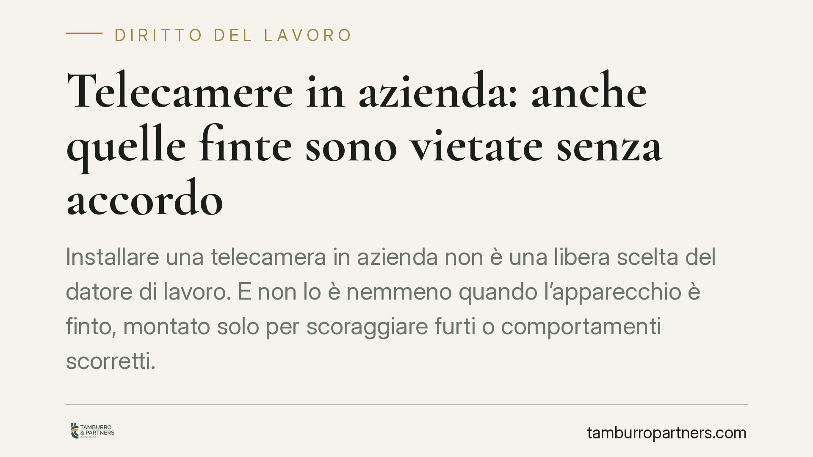

Telecamere in azienda: anche quelle finte sono vietate senza accordo
Installare una telecamera in azienda non è una libera scelta del datore di lavoro. E non lo è nemmeno quando l'apparecchio è finto, montato solo per scoraggiare furti o comportamenti scorretti. La ragione è semplice: ciò che conta è l'effetto di controllo a distanza sui lavoratori, non il fatto che il dispositivo registri davvero. Senza accordo sindacale o autorizzazione pubblica, l'installazione resta vietata.

Il punto della questione
La convinzione che una telecamera finta sia lecita perché «tanto non riprende nulla» è diffusa ma errata. Il divieto previsto dallo Statuto dei lavoratori non colpisce la registrazione in sé, bensì la possibilità di esercitare un controllo a distanza sull'attività dei dipendenti.
Un dispositivo finto produce lo stesso effetto di condizionamento di uno reale: il lavoratore che si sente osservato modifica il proprio comportamento. È questo effetto psicologico, non la ripresa effettiva, a far scattare la disciplina di garanzia.
Inquadramento normativo
La norma di riferimento è l'articolo 4 della Legge 300/1970 (Statuto dei lavoratori), come riformato dal D.lgs. 151/2015. La disposizione stabilisce che gli impianti audiovisivi e gli altri strumenti dai quali derivi anche la possibilità di controllo a distanza dei lavoratori possono essere installati solo per esigenze organizzative, produttive, di sicurezza del lavoro o di tutela del patrimonio aziendale.
L'installazione, però, è subordinata a una condizione formale precisa: serve un accordo collettivo con le rappresentanze sindacali (RSU o RSA). In mancanza di accordo, occorre l'autorizzazione dell'Ispettorato territoriale del lavoro, oggi incardinato nell'Ispettorato Nazionale del Lavoro.
Un punto va chiarito con fermezza: il consenso dei singoli dipendenti non sostituisce l'accordo sindacale né l'autorizzazione amministrativa. La tutela prevista dall'articolo 4 ha natura collettiva e indisponibile. Il lavoratore non può «rinunciare» individualmente a una garanzia pensata per riequilibrare la posizione di debolezza in cui si trova rispetto al datore.
Perché anche la telecamera finta rientra nel divieto
L'interpretazione è coerente con la ratio della norma. Se bastasse spegnere l'apparecchio o installarne uno non funzionante per aggirare la procedura, la tutela sarebbe svuotata. Il lavoratore, non sapendo se la telecamera registra, si comporta come se fosse sempre sotto osservazione.
Per questo l'obbligo di accordo o autorizzazione scatta per la sola potenzialità di controllo. Il carattere dissuasivo dichiarato dal datore non esclude il vincolo: anzi, lo conferma, perché proprio sul controllo fa leva.
Implicazioni pratiche
Per il datore di lavoro le conseguenze non sono marginali. L'installazione irregolare, reale o simulata, espone a profili di responsabilità penale previsti dallo stesso Statuto per la violazione dell'articolo 4, oltre alle sanzioni amministrative connesse.
Vi è poi un effetto spesso sottovalutato sul piano probatorio e disciplinare. I dati o le immagini raccolti attraverso un impianto non autorizzato rischiano di essere inutilizzabili. Un licenziamento o una contestazione fondati su prove acquisite illegittimamente possono risultare privi di base, con l'ulteriore conseguenza di un contenzioso dagli esiti incerti.
Nel caso della telecamera finta il tema probatorio non si pone, perché non vi sono registrazioni. Resta però intatta l'esposizione sanzionatoria legata alla mancata procedura.
Per il lavoratore e per le rappresentanze sindacali, la vicenda ribadisce che l'azienda non può procedere unilateralmente. La contrattazione sull'installazione degli impianti è un diritto, non una formalità.
Cosa fare in concreto
- Verificare prima di installare. Qualsiasi dispositivo con potenziale di controllo, anche finto o disattivato, richiede la procedura prevista dall'articolo 4. Non affidarsi al consenso individuale dei dipendenti.
- Aprire il confronto sindacale. Formalizzare l'accordo con RSU o RSA, individuando con precisione le finalità ammesse (sicurezza, tutela del patrimonio, esigenze organizzative).
- Attivare l'Ispettorato in assenza di accordo. Richiedere l'autorizzazione all'Ispettorato territoriale del lavoro competente prima di procedere, conservando la documentazione.
- Informare i lavoratori. Rispettare gli obblighi di informativa sul trattamento dei dati, coordinando la disciplina lavoristica con quella sulla protezione dei dati personali.
- Regolarizzare gli impianti esistenti. Chi ha già installato dispositivi, inclusi quelli simulati, dovrebbe verificarne la conformità e sanare eventuali carenze procedurali.
Consigliamo una valutazione preventiva caso per caso: le esigenze aziendali possono essere legittime, ma vanno incanalate nella procedura corretta per evitare che un intento di tutela si trasformi in una fonte di responsabilità.
---
*Contributo informativo a cura di Tamburro & Partners - Avv. Giuseppe Tamburro. Non costituisce parere legale.*
Ogni storia di lavoro ha i suoi tempi.
Se gestisci HR e vuoi un confronto su contenzioso, ispezioni o licenziamenti, scrivi allo studio. Ti rispondiamo entro un giorno lavorativo.